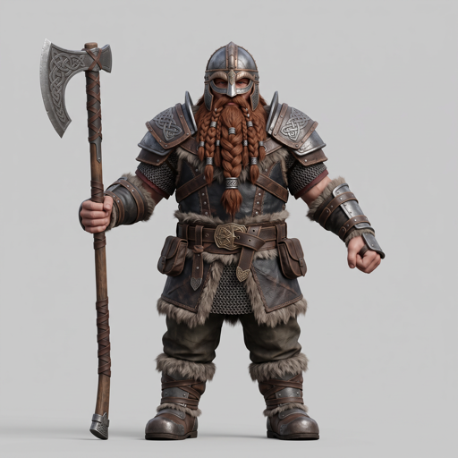
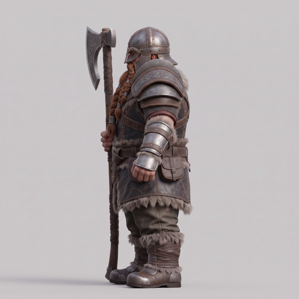
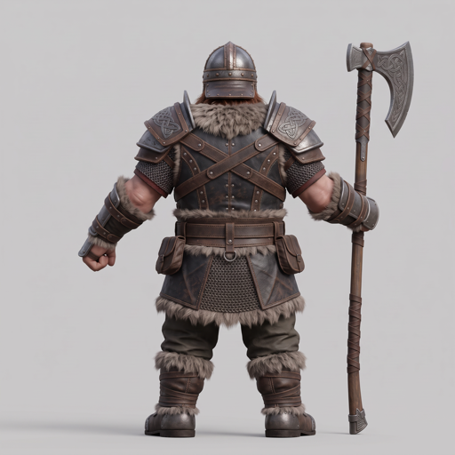
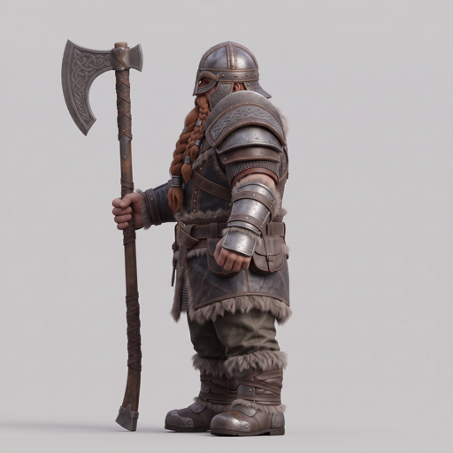
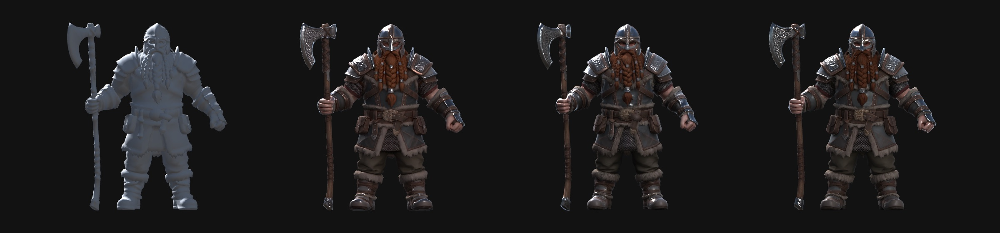
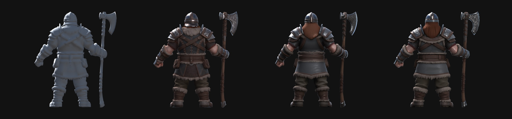
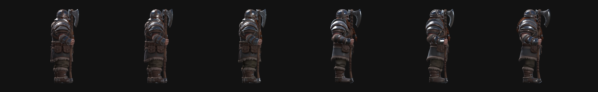

Ryandi · 30 Oct 2026 · Why: Game Studio's 3D node moved off the Tripo CLI (browser login, kept failing on cardinal) to Tripo on Fal. This page checks the new option against the old one.
The input is one dwarf, drawn as four views (front, left, back, right) with Nano Banana on the Game Studio canvas: studio.argus.dev/games/da22ab81-89bb-4876-b496-6f483d5bc5e2/canvas. Every option got the same images and a 20,000-triangle cap. Each ran 3 times; option ④ ran 5 times.




| Option | Input | Back | Output | Tris | Verts | Time | Cost / model |
|---|---|---|---|---|---|---|---|
| ① Old: Tripo Studio P2 multiview, via the Tripo CLI | 4 views | ✅ matches | shape only | 21,278 | 10,771 | 63–101 s | 100 credits (≈$0.18–0.67) |
| ② New default: Tripo H3.1 multiview on Fal | 4 views | ✅ matches | textured · UV · PBR | 19,374 | 12,172 | 145–234 s | $0.30 |
| ③ Tripo P2 on Fal, front only | front view | ❌ invented | textured · UV · PBR | 20,982 | 29,325 | 153–204 s | $1.10 |
| ④ Tripo H3.1 on Fal, front only | front view | ❌ invented | textured · UV · PBR | 19,413 | 12,343 | 149–218 s | $0.30 |
4 views · 100 credits (≈$0.18–0.67) per model · 63–101 s · Shape only. Colour, UVs and PBR were a separate Texture step (+20 credits).
4 views · $0.30 per model · 145–234 s · Textured, UV-mapped, PBR. The only option whose back matches the back view.
front view · $1.10 per model · 153–204 s · Textured, UV-mapped, PBR. Fal’s P2 takes one image, so it invents the back.
front view · $0.30 per model · 149–218 s · What the H3.1 node does with only a front view wired. It invents the back too.
Setup matches our games: Unity 6000.3.10f1 + URP 17.3, the same as rampage-client, mmo and sdk-example, plus Unity's glTF importer com.unity.cloud.gltfast 6.20. All 14 models were imported in batch mode and rendered under the same light. Shown left to right: ① old CLI, ② H3.1 4-view, ③ P2 front-only, ④ H3.1 front-only (run 1 of each, scaled to equal height).


As imported, before any rotation, the models face sideways. Shown: H3.1 4-view ×3, then P2 ×3.

com.unity.cloud.gltfast, or have Game Studio convert to FBX before it hands the file to Unity. The old CLI's files were also mesh-compressed (meshopt), which needs com.unity.meshopt.decompress. That package only exists as experimental 0.3.0, because glTFast 6.20 refused the 0.1 preview. The Fal models don't need it.orientation / export_orientation options might fix it at the source; untested.auto_size option might help; untested.glTF-pbrMetallicRoughness). It looks right under URP, but production assets should be moved to the game's own shaders.Opinion: in Unity, ② looks closest to the concept from every side, and it's usable in a game after the turn, scale and texture fixes. ③ is just as good from the front, but its back doesn't match the design. ① can't be judged on looks without paying for its texture step, and its shape is softer than ②'s.
Fal bills per model with no subscription: H3.1 $0.30 textured, P2 $1.10. The old path used Tripo Studio credits from a subscription. P2 multiview cost 100 credits (shape only); its Texture step cost 20 more.
| Tripo Studio plan | $/month | Credits/month | $/credit | 1 P2 model (100) | P2 + texture (120) | This test (300) |
|---|---|---|---|---|---|---|
| Professional, monthly | $20 | 3,000 | $0.0067 | $0.67 | $0.80 | $2.00 |
| Professional, annual | $13 | 3,000 | $0.0043 | $0.43 | $0.52 | $1.30 |
| Max, monthly | $90 | 25,000 | $0.0036 | $0.36 | $0.43 | $1.08 |
| Max, annual | $45 | 25,000 | $0.0018 | $0.18 | $0.22 | $0.54 |
| Top tier, monthly | $330 | 100,000 | $0.0033 | $0.33 | $0.40 | $0.99 |
| Fal H3.1 (for comparison) | – | – | – | $0.30, textured | $0.90 (3 runs) | |
The Tripo figures are best case, assuming every credit gets used. Credits reset each month, a plan belongs to one person's login, and that login is what kept failing on cardinal. Plan prices come from Tripo's docs as of October 2026 (their pricing page blocks automated reads), so check before buying. Spent on this test: about $5.70 on Fal and 300 Tripo credits (≈$2 on the Professional monthly plan).
The Fal runs used Game Studio's own Fal adapter (main @ 584ca3a), the same code the Model node runs. The old runs used the Tripo CLI with the arguments the BB plugin used (generate multiview-to-model --model tripo-p2 --param face_limit=20000, then task get --download). Triangle and vertex counts come from the GLB files. The Unity figures come from a batch import in a throwaway project.